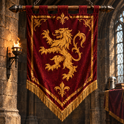
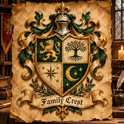
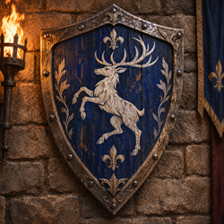

House Banners
Display your house's colors with a custom medieval banner featuring your chosen symbol and design. Each banner represents the strength and honor of your house.

Zany Mongoose House of Banners creates medieval-inspired banners, family crests, and decorative shields for families and adventurers. Our designs celebrate the traditions, colors, and symbols of noble houses.
Display your house's colors with a custom medieval banner featuring your chosen symbol and design. Each banner represents the strength and honor of your house.

Create a unique family crest inspired by traditional heraldry. Choose meaningful symbols and bold colors to represent your family's history and identity.

Complete your medieval collection with a decorative shield featuring your house's emblem. Perfect for displaying in a great hall or at a medieval-themed celebration.

Choose your house colors and preview how your family crest would look like with a new border.
Selected House Color: Crimson Red